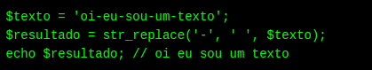
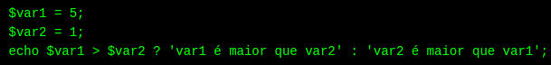
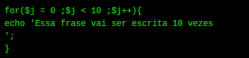
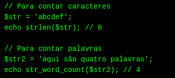

PHP é uma linguagem de programação para o web,ela é uma escolha certa para quem quer trabalhar em projetos qualificados e sem complicação.
Para quem não tem tanto conhecimento sobre as linguagens de programação,é comum a dúvida sobre o que é PHP,pois tem pessoas que podem aprender várias linguagens de maneira independente,assistindo tutoriais e praticando todos os dias por alguns meses ou anos até terem conhecimentos.Hoje,podemos dizer que php é uma programação das mais valorizadas,especialmente para sites,blogs e outros canais da web.
Para o desenvolvimento de aplicações ele funciona para a web e para criar sites,proporcionando a conexão entre os servidores e a interface do usuário.Por ser um código aberto.então qualquer um pode realizar mudanças na estrutura dessa linguagem.O usuário pode utilizar PHP para programar em qualquer projeto e,depois,comercializá-lo tranquilamente.Apesar disso,é a possibilidade de melhorias constantes no código,algo que os programadores costumam fazer.
Sabemos que o PHP,ee é descrito como uma linguagem do lado do servidor.Na prática,significa que ele é aplicado na programação do servidor da web responsável por rodar a aplicação ou,um site.Esse projeto permite que os elementos de uma página sejam carregados antes de serem exibidos ao usuário que acessa um site.O código PHP é executado no servidor web que,ao ler os comandos,consegue habilitar todos os elementos de interface visual do site.
A principal aplicação da linguagem PHP,quando falamos sobre web,que seja para estruturar sites em WordPress.O desenvolvimento de código aberto facilitam muito o caminho para profissionais que optam por estruturar sites utilizando a plataforma.Assim,configurações e edições são feitas de modo muito mais simplificado.
Para o PHP, tudo se torna mais simples saber da sua utilidade e função quando usamos exemplos concretos de aplicações.seu uso é para a web,graças á sua capacidade de conectar ao servidor e interface do usuário,levando todo o código em HTML.
Hoje,empresas gigantes mundiais,tem o PHP como base de suas aplicações.
Uma das principais caracteristicas do PHP é o fato de ser uma linguagem bem mais dinamica.Sites que terão aplicações robustas e necessitam de duas coisas:tempo de resposta mais ágil e conexão com banco de dados de grande porte.Por isso, que o Facebook usa PHP!
A ideia de uso dessa linguagem é diminuir o tempo de carregamento das páginas,deixando o servidor executar de forma mais leve para carregar plugins e aplicações nos sites.Pois,assim,é possível desenvolver sites com ótimo desempenho,ainda com repletos de recursos,de maneira ágil e com a garantia de sustentabilidade de desenvolver em logo prazo usando PHP.
Hoje,o mercado de programação busca profissionais que tenham conhecimentos em aplicações web e ,nesse cenário,PHP é o recurso principal,e não é á toa.
Entre os principais bancos de dados utilizados,PHP é compativel com:Oracle,MySQL,Interbase,SQLite,Sybase.
Buscar um caracter específico em uma string e substitui-lo por outro
Fazer uma comparação If/Else em uma linha
Loop Simples
Contar quantos caracteres ou palavras há em uma string
10 códigos úteis em PHP para se ter na mão. [S. l.]: Eufacoprogramas, 17 jul. 2017. Disponível em: https://eufacoprogramas.com/10-codigos-uteis-em-php-para-se-ter-na-mao/. Acesso em: 10 jun. 2022.